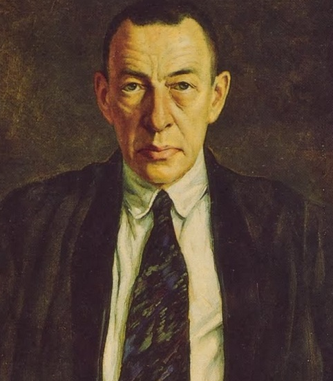
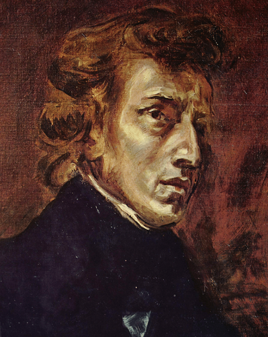

Pyotr Ilyich Tchaikovsky
Compositor
“«En verdad, si no fuera por la música, habría más razones para volverse loco».”

Serguéi Rajmáninov
Compositor y pianista
“La música es suficiente para toda la vida, pero toda una vida no es suficiente para la música.”

Frédéric François Chopin
Profesor, compositor y virtuoso pianista
"La vida es una inmensa disonancia."

Franz Liszt
Director de orquesta y compositor
“Llevo una profunda tristeza en el corazón que de vez en cuando debe estallar en sonido.”